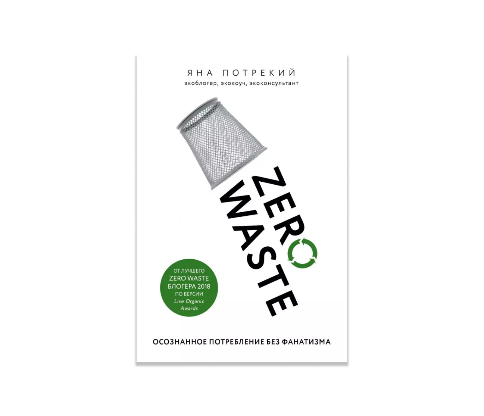

Zero Waste. Осознанное потребление без фанатизма. Яна
Потрекий

Читать
Подкасты об осознанном потреблении играют важную роль
в распространении информации и образовании людей
по вопросам устойчивого образа жизни. Они предлагают удобный
и доступный формат для получения знаний о различных
аспектах осознанного потребления, включая экологию, этику,
устойчивую моду и многое другое. Подкасты также помогают
вдохновить и мотивировать людей на практические
действия, которые они могут предпринять в своей повседневной
жизни для уменьшения своего экологического следа. Благодаря
разнообразию тем и гостей, подкасты об осознанном
потреблении являются ценным инструментом для создания
осведомленного и ответственного сообщества.